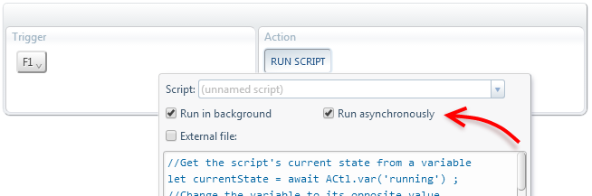

ACtl.sleep
Sleeps for the specified amount of time.
ACtl.sleep(millisec) millisec Type: number
Amount of milliseconds to sleep for.
Returns Type: Promise Resolves to: undefined
Returns immediately. The Promise will resolve after millisec milliseconds have passed.
Example
Switch to the tab on the right repeateadly every half a second, endlessly.
let currentState = await ACtl.var('running') ;
await ACtl.var('running', !currentState) ;
while( await ACtl.var('running') ){
await ACtl.setTabState('#righTabWrap', 'active') ;
await ACtl.sleep(500) ;
}
If you run this script a second time, the loop will stop.
The first time the script runs, the running variable will be undefined.
So, the script will change it to true and then it'll enter the infitite loop.
While the script is running, you can run the script again, so now there will be two instances of the same script running.
The second instance will read the running variable and change it to false.
Hence, it will not enter the infinite loop and will also cause the first instance of the script to get out of the loop.
This example, other than showing the use of ACtl.sleep, demonstrates how multiple instances of the same script can run at the same time
and communicate with each other via private storage variables.
Of course, you must run this script asynchronously so that a second instance of the script can start while the first one is still running.
Otherwise, AutoControl would wait forever for the first instance to finish, and the only way to regain control would be "Emergency repair".

 Forum
Install now from theChrome Web Store
Forum
Install now from theChrome Web Store